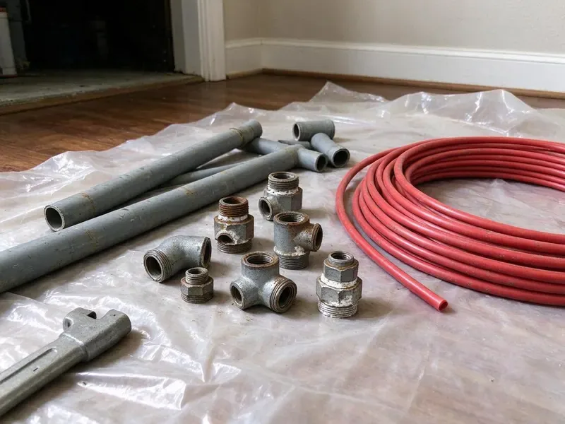

Well Pressure Tank Replacement in West Fargo, ND
New tank, new tank tee, new gauge, pre-charge set to the switch. HPN Plumbing handles well tank replacement in West Fargo, ND.
- Prompt Tank Swaps
- Fast Pressure Tank Swaps
- Licensed & Insured
- Local Service
Replace That Waterlogged Tank in West Fargo, ND.
New tank tee, gauge and relief valve are part of the job.
Well Pressure Tank Replacement in West Fargo, ND
Tap the side of the tank. The top should ring hollow. HPN Plumbing uses that knock test along with a gauge on the air valve and a look at the pressure switch, so in West Fargo we can tell which part has failed before we sell you anything, and most of the time it is the tank.
Work we handle every week:
- Multi-tank and large capacity setups
- Waterlogged and leaking tank replacement
- Pressure switch upgrades

Additional Plumbing Replacement Services in West Fargo, ND
When repairs are no longer enough, our replacement services in West Fargo, ND deliver modern, efficient equipment installed right.


Customers
Why Choose HPN Plumbing for Well Pressure Tank Replacement in West Fargo, ND?
We test before we replace. Five minutes with a gauge tells us a lot. If water comes out of the Schrader valve on top, the bladder is torn, and if the tank holds air but the pump still cycles, we look at the switch and check valve next. No guessing.
- Right Diagnosis, We test the tank, switch and pump before quoting a replacement.
- Code Compliance, Relief valves and fittings follow code, and we pull a permit where it is required.
- Proven Tanks, Well-X-Trol, Flex-Lite and Well-Rite tanks are on our trucks in common sizes.
Citywide Coverage
Old well houses, cramped closets and damp crawlspaces are where tank swaps get tricky. We plan the route out first. Across West Fargo, that often means a composite tank that weighs less than steel and fits through narrow openings more easily.
Experienced Team
Our plumbers work on well systems all the time. Tank, switch and pump work as one system, and our team knows it. That experience shows up in the small checks, like timing a full cycle and reading amp draw on the pump. Details matter.
Safety-First Approach
Well water feeds your household, so we keep it clean. New fittings get handled with clean hands and fresh sealant. After the swap we flush the lines, and suggest disinfecting the well if the system was open a while. Clean water first.
Trusted Certified West Fargo Plumbing Services Professionals
At HPN Plumbing, we are proud to offer certified plumbing services throughout West Fargo, ND. Those papers on the wall mean something. Every repair, install and maintenance visit follows strict safety and quality rules, and the plumbers doing the work carry recognized industry credentials.
Call Us Now PHCC Plumbing Contractor Recognition
PHCC Plumbing Contractor Recognition Better Business Bureau (BBB) Accreditation
Better Business Bureau (BBB) Accreditation Angi Certified Pro
Angi Certified Pro ISO 9001 Quality Management Certification
ISO 9001 Quality Management CertificationPressure Tank Replacement Choices in West Fargo, ND
Well-X-Trol Pressure Tank Installation in West Fargo, ND
Amtrol's Well-X-Trol line uses a diaphragm design. It is one of the most common tanks we install. Its stainless or polypropylene water connection keeps water off the steel shell, which helps the tank resist rust from the inside, and the factory pre-charge still gets checked and adjusted to your switch on install.

Emergency Well Pressure Tank Replacement in West Fargo
A tank that bursts or a pump that runs nonstop needs attention fast. Turn the pump breaker off right away. A pump that keeps running against a failed system can overheat and burn out, and we aim to swap the tank before the pump suffers. Water back tonight.
Preventative Well Pressure Tank Maintenance in West Fargo, ND
Check the air charge once a year. Shut off the pump, drain the system to zero, and put a tire gauge on the valve at the top of the tank, topping it up to two psi below the cut-in if it reads low. Water out of the valve means a torn bladder.
Flex-Lite Pressure Tank Replacement in West Fargo
Flex-Lite tanks have a composite shell. They will not rust. That makes them a good pick for damp basements, crawlspaces and well houses where steel tanks tend to corrode from the bottom up, plus they are easier to move into cramped utility rooms. Same plumbing as steel.
Commercial Well Pressure Tank Services in West Fargo, ND
Commercial wells often run several tanks in parallel. Some run four or more on a manifold. We check each tank's pre-charge separately, since one bad tank in a bank can still cause short cycling, while planning the work so the building keeps water. Larger tanks need two people.
Residential Well Pressure Tank Replacement in West Fargo
Most homes on a well have a tank between 20 and 86 gallons sitting near the pressure switch. First step, kill the breaker to the pump. Then we drain the system, unthread the old tank from the tank tee, set the pre-charge on the new one, and connect it with new fittings and fresh sealant. Usually a morning.
Diaphragm Pressure Tank Replacement in West Fargo, ND
Diaphragm tanks use a flexible sheet clamped inside the shell. The diaphragm splits air from water. When it fails, symptoms match a bladder tank, with short cycling, pressure swings and water spitting from the air valve. Replacement is the usual answer.

Cost-Effective Well Pressure Tank Upgrades in West Fargo, ND
Upgrading a size often costs less than people think. The difference between two tank sizes is usually modest. A larger tank means fewer pump starts per day, which is the cheapest way to extend the life of your pump, so we often recommend it during a replacement.
Local Pressure Tank Replacement Near Me in West Fargo, ND
Nearby neighbors on wells often have similar systems, since many were installed by the same few drillers. Patterns repeat. If one home in West Fargo had an undersized tank from the original install, the next one often did too, which helps us bring the right part.
Searching 'well pressure tank replacement near me' usually means the pump is clicking or the pressure is gone. We carry common tanks on the truck. That lets us swap a tank the same day across West Fargo, ND, and often by the afternoon of the call. Faster than waiting.
HPN Plumbing at a Glance
- Licensed and insured plumbers serving West Fargo, ND
- 24/7 emergency service with same-day scheduling
- Clear written estimates, no hidden fees
- 4.9-star rated by 408+ North Dakota customers
West Fargo Map
West Fargo Information
- Population
- 40,400
- Area codes
- Local
- Service area
- West Fargo and towns within a 40 mile drive
- Nearby
- Fargo, Horace, Wahpeton, Valley City
The pressure tank in West Fargo, ND homes on wells holds a cushion of pressurized water so the pump is not starting every time you open a tap.
Talk to a Plumber
Reach out to HPN Plumbing for reliable plumbing work done by licensed pros in West Fargo, ND.
Our Specialized Plumbing Services in West Fargo, ND
At HPN Plumbing, we handle the full list of plumbing services across West Fargo, ND. From leak detection to full system installs, our team works fast and charges fair prices on homes and commercial properties alike. Here are the core services we offer:


Our Pressure Tank Steps in West Fargo, ND
Three things set the choice: flow, switch and room.
Call Us
Call (701) 403-1348 and describe the pressure problem. We quote a price range.
Test and Confirm
We check the air charge, switch and gauge. Then we confirm what needs replacing.
Replace and Adjust
We install the new tank, set pre-charge and adjust the switch. A cycle test finishes it.
Frequently Asked Questions About Well Pressure Tank Replacement in West Fargo
Most cost $900 to $2,200 installed, depending on tank size and whether the switch and tank tee are replaced too. Large capacity or multi-tank setups can run $2,500 or more.
For experienced DIYers, it can be done. Most people are better off hiring it out. Pre-charge, switch settings, relief valve rating and electrical safety all have to be right, and a mistake can damage the pump or leave the system unsafe. Know your limits.
Check the air charge once a year. With the pump off and the system drained to zero, the tank should read about two psi below cut-in, and if it reads low, you can add air with a small compressor. Watch for rust too.
Rapid pump cycling, pressure swings and water at the air valve. A rusted tank bottom is another. A knock test that sounds solid all the way up, or pressure that bounces quickly, also points to a failed tank.
Figure on a decade or so. Life depends on pre-charge, water quality and how often the pump cycles, so a yearly air check really does add years. Bigger tanks tend to last longer.
It depends on where you live. Many places treat a like-for-like swap as maintenance. Others require a plumbing permit, especially if electrical work or a new switch is involved, and we check the local rule before we start. We handle it either way.
Well-X-Trol, Flex-Lite and Well-Rite, mostly. Other major brands too.
Amtrol Well-X-Trol, Flexcon Flex-Lite and Well-Rite are our usual picks. Each has a solid track record. We also install other major brands when they fit the job, since some homeowners want to stay with what they have. Size matters more.
Hear From Customers Who Hired Our Plumbing Experts

Patricia H.
We had a slab leak that two other companies could not find. HPN Plumbing located it in under an hour with a listening device. They rerouted the line through the attic instead of breaking up the floor, so we kept our kitchen tile.
Slab Leak Repair · Jamestown, ND
Emily R.
The shutoff valve under our kitchen sink snapped off in my hand on a Sunday morning. HPN Plumbing had someone out by early afternoon. He replaced both angle stops with quarter turn valves and showed me where our main shutoff was, which I honestly did not know.
Plumbing Repair · Horace, ND
Jessica T.
We were adding a gas range in a kitchen remodel and needed a new line run from the meter. The plumber pulled the permit, ran the pipe through the crawl space, and had it inspected and approved within the week.
Gas Line Repair · Fargo, ND
James P.
Our restaurant had a slow leak at the hand sink that was rotting the cabinet base. HPN Plumbing came in at six in the morning before prep, replaced the trap and both supply lines, and was packed up before my first cook clocked in.
Commercial Plumbing · Fargo, ND
Mark T.
The floor drain in our office break room backed up every few weeks. The plumber ran a cable, then put a camera down and found roots at a joint about thirty feet out. Seeing it on the screen made the decision easy.
Drain Cleaning · Jamestown, ND
Nathan E.
Our tankless heater kept throwing an error code and shutting off mid shower. The tech flushed the heat exchanger, which was full of scale, and replaced a bad flow sensor. Hot water has been steady for half a year now.
Water Heater Repair · Wahpeton, ND